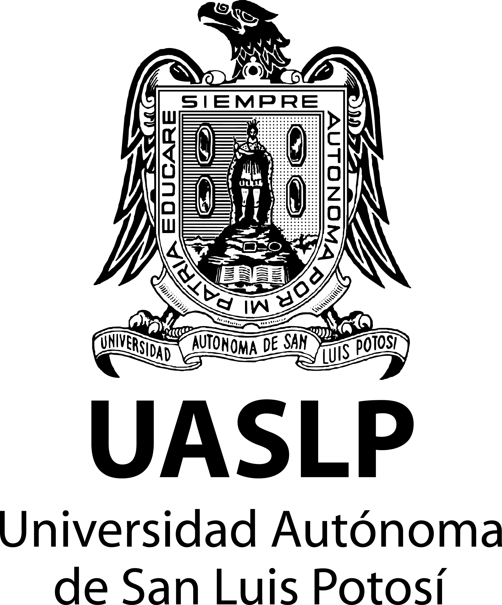
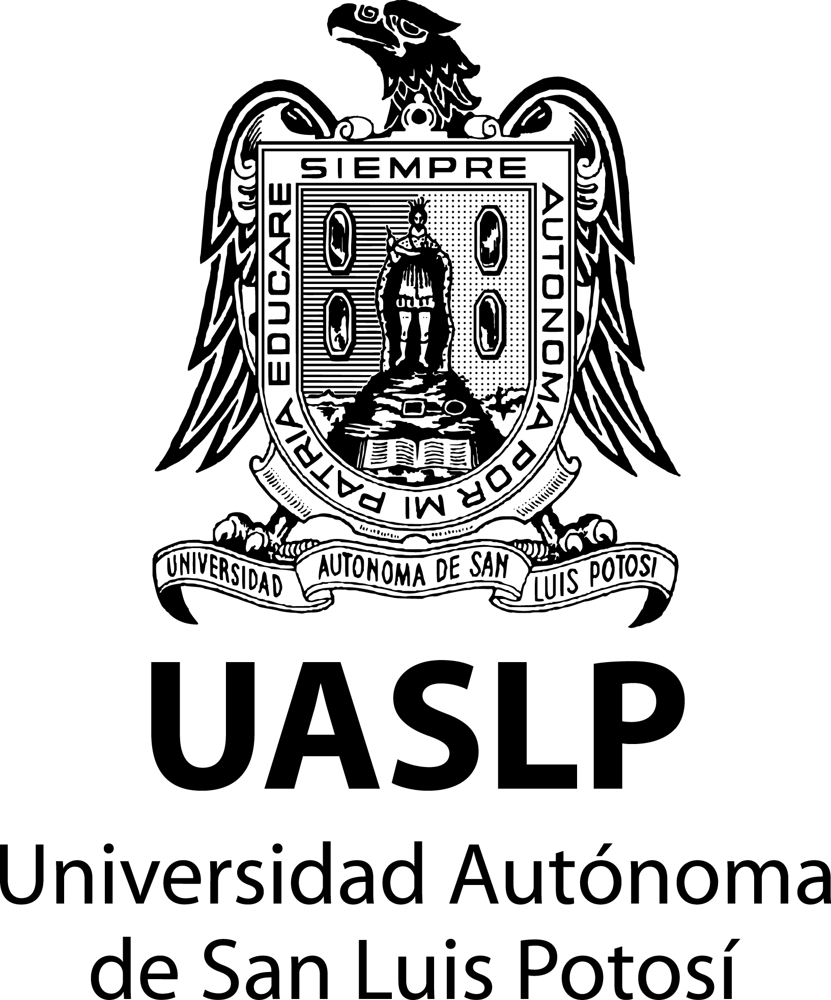

Bienvenido a mi página personal
Hola mi nombre es Jesús Abel Pérez Vidales soy egresado de la carrera de programación del Cbtis 46 en Ciudad Valles San Luis Potosí, tengo 19 años y actualmente estoy cursando la carrera de Ingenieria en informática en la UASLP, esta es una página elaborada en el programa de Sublime text, espero sea de su agrado.
Más que nada esta página trata de agrupar todo lo visto durante el presente semestre de tal forma que podamos visualizar las herramientas utilizadas para la creación de todos nuestros proyectos durante el periodo actual. Así a su vez resumir cada conocimiento de una forma en la que podamos compartirlo con las demás personas de una manera fácil y accesible.
 
